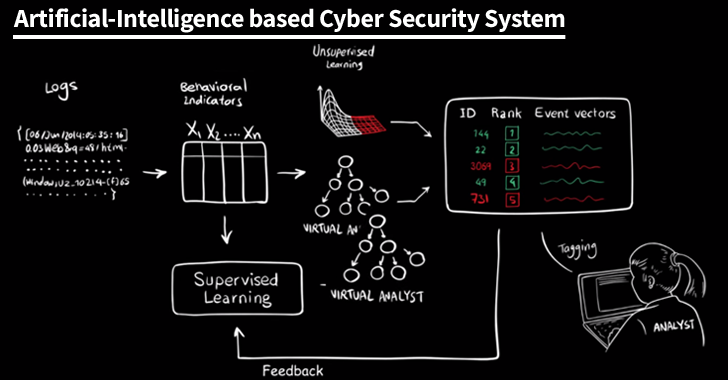

Benefits
The Benefits of Artificial Intelligence
There are both benefits and risks to any new technology that is released and pushed into main stream consumerism. In the case of artificial intelligence however, many people feel very strongly towards or against the adoption of artificial intelligence, because they have very strong opinions about the benefits and risks of AI. There are many rational concerns people have, but the push for more robust AI would not occur if there were not countless people willing to take the risks of AI in order to reap the plentiful benefits that it provides.
Jobs
Artificial intelligence produces jobs very quickly and has already had a huge impact on the working industry. AI creates numerous jobs in the sense it needing people to develop the AI, needing people to learn to run and troubleshoot AI, people to construct AI hardware, and people that manage the AI on an intercompany level. These new jobs that are created are beneficial to the working class, but it is yet to be seen whether or not AI will create enough new jobs to outpace the amount of jobs that it is replacing.
Economy
AI has been helping the economy ever since it has become mainstream. It costs a lot of money to implement AI into a business which allows more money to go back into the economy and therefore strengthen it. AI is also projected to allow Business to grow by over 38% in the United States of America by 2035. This is massive business expansion. The impact that artificial intelligence has on the economy is massive, and its high costs only promote the circulation of money, allowing it to be very valuable to the economy.
Cyber Security
With the internet becoming the central platform of the world, and computers becoming popular to an extremely high degree, cyber security has never been more important than it is now. AI has helped cyber security in unmeasurable amounts. There are specific AI that are designed, that are only becoming more advanced, to hack into security systems of large companies like Google and Microsoft to try and exploit and find weaknesses. These weaknesses are then reported to their respective parent companies. After being reported, The parent companies are able to work to quickly patch the security breach. This strengthens everybody’s cyber security. On the downside, hackers can also use intelligent AI’s to hack into corporations or personal information and actually perform real damage. Overall, they have been used to strengthen cyber security on the internet.
Cyber Security AI from MIT
In 2016, Massachusetts Institute of Technology began building an Artificial Intelligence to detect breaches in cyber security, reviewing 3.6 billion lines of code per day to do so. Now, they're working with machine-learning company PatternEx to develop a cyber security AI that relies on both unrestricted self-learning, and human feedback. The new technology is being called AI2 - or AI squared - for its duality of learning.
Consumer Benefits
Consumers are the driving force behind money and money is the driving force behind the world. This makes it safe to say that AI benefits to consumers are huge and very important. The Analyst firm Gartner predicted that by 2020 85% of company-client interactions will happen person-AI system. This would be caused by the rise of chatbots and could significantly cut down waiting times needed for client interaction and would thus save time, money, and energy. The push for AI would allow consumers the ability to get what they want more efficiently and at a faster rate than what is currently possible now. Businesses would be able to help more clients which would overall help the consumer experience.